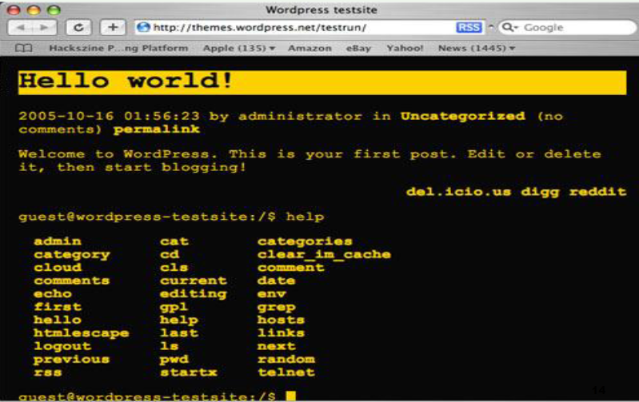
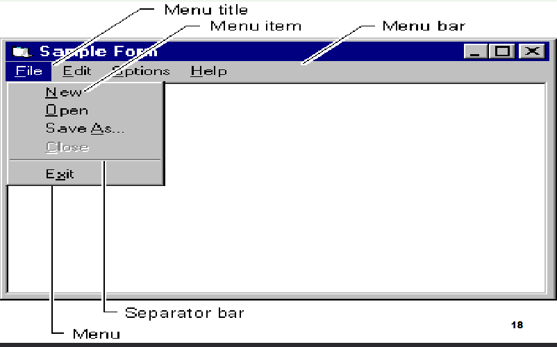
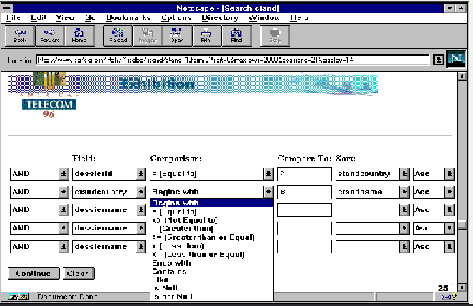
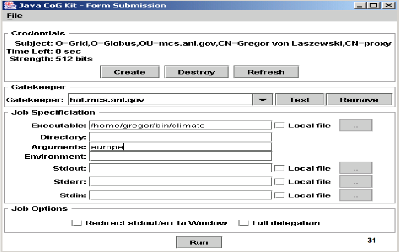
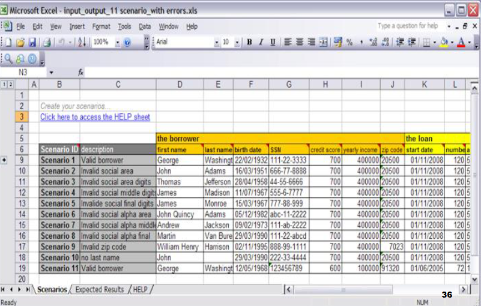

Pendahuluan
Ragam Dialog/Gaya Interaksi
Aspek penting dalam dialog adalah gaya interaksi
Interaksi merupakan dialog antara manusia dan komputer
Sifat Penting Ragam Dialog
-
Inisiatif: Pengguna memberikan tanggapan atas prompt yang berikan
oleh komputer untuk memasukkan perintah atau parameter perintah
-
Keluwesan Pengguna mempunyai kesempatan melakukan customizing dan
memperluas antarmuka dari sebuah sistem untuk memenuhi kebutuhan.
-
Kompleksitas Pengelompokan dalam menerapkan model yang diinginkan
pengguna ke dalam sistem, dan hal ini dapat diperoleh dengan
menggunakan hirarkhi atau ortogonalitas atau keduanya
-
Kekuatan didefinisikan sebagai jumlah kerja yang dapat dilakukan
oleh sistem untuk setiap perintah yang diberikan oleh pengguna.
-
Beban Informasi Dalam hal ini menitik beratkan pada penyajian
informasi yang dihasilkan komputer kepada pengguna. Agar penyampaian
informasi itu dapat berdaya guna dan beban informasi yang terkandung
di dalam suatu ragam dialog seharusnya disesuaikan dengan aras
pengguna
-
Konsistensi Sistem yang konsisten akan mendorong pengembangan
mentalitas dengan memberikan petunjuk kepada pengguna untuk
mengekstrapolasi pengetahuan yang ia miliki untuk memahami perintah
yang baru lengkap dengan pilihan yang ada.
-
Umpan Balik Pada ragam dialog jika pengguna melakukan kesalahan
komputasi, maka program akan menampilkan suatu pesan kesalahan.
-
Observabilitas Sistem dikatakan mempunyai sifat observabilitas
apabila sistem itu berfungsi secara benar dan nampak sederhana bagi
pengguna, meskipun sesungguhnya pengolahan secara internalnya sangat
rumit.
-
Kontrolabilitas Kontrolabilitas merupakan kebalikan dari
observabilitas, dan hal ini berimplikasi bahwa sistem selalu berada
di bawah kontrol pengguna. Agar hal ini tidak tercapai, antarmukanya
harus mempunyai sarana yang memungkinkan pengguna untuk dapat
melakukan kendali.
-
Efisiensi melibatkan unjuk kerja manusia dan komputer secara
bersama-sama adalah throughput yang diperoleh dari kerjasama
tersebut
-
Keseimbangan Strategi yang diambil dalam perancangan sistem manusia-
komputer haruslah dapat membagi-bagi pekerjaan antara manusia dan
komputer seoptimal mungkin
Ragam Dialog/Gaya Interaksi
- Command Line Interface
- Menu’s
- Natural Language
- Question/Answer and Query Dialogue
- Form-Fills and Spreadsheets
- WIMP
- Point and Click
- Three–Dimensional Interfaces
Command Line Interface

Menu's

Query Interfaces

Form-fills

Spreadsheets (MS Excel)
